Auf den Spuren jüdischer Kultur
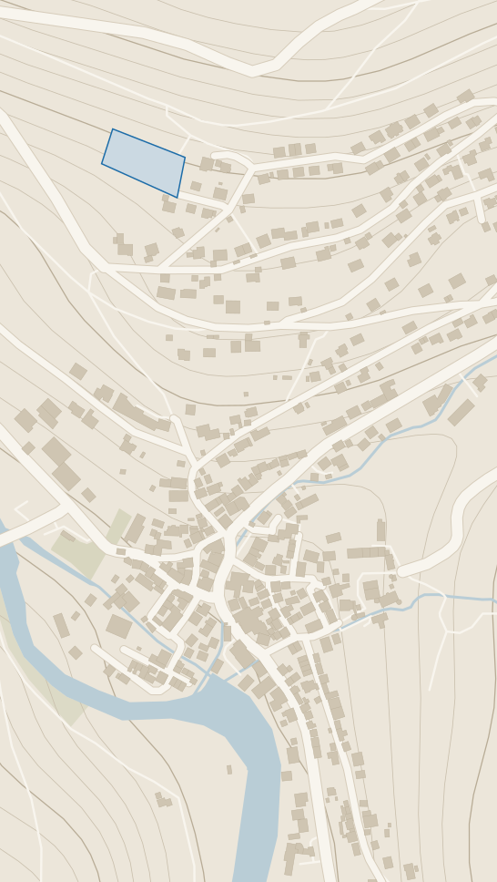
Wegverlauf schematisch. Kartendaten © OpenStreetMap-Mitwirkende, Höhenlinien Copernicus DEM.
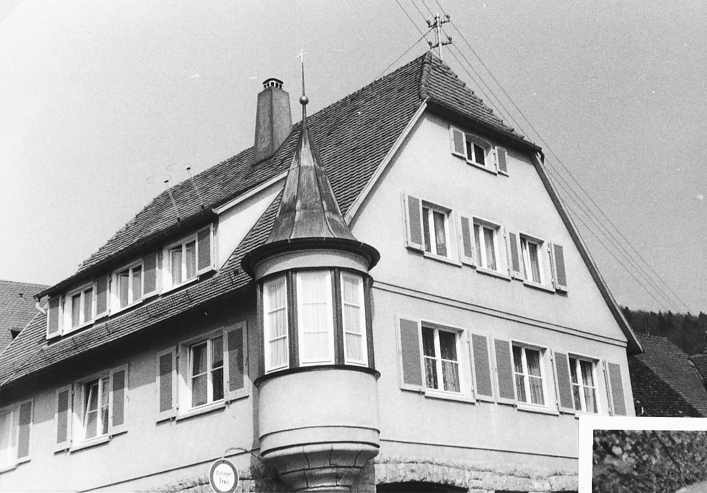
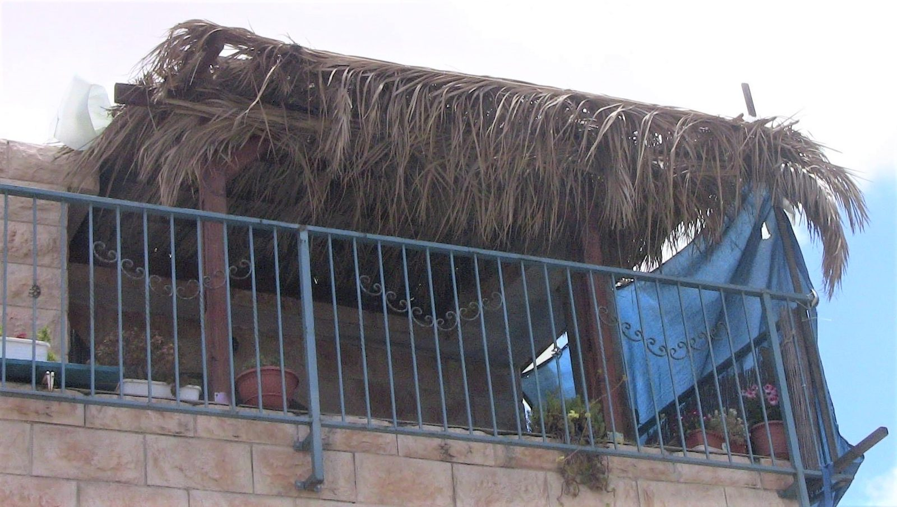
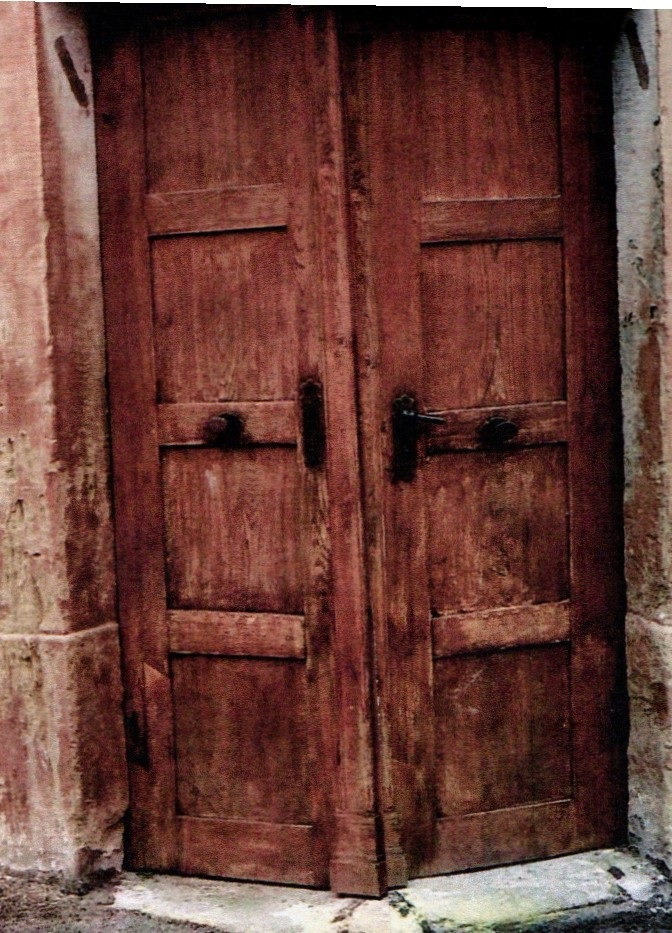
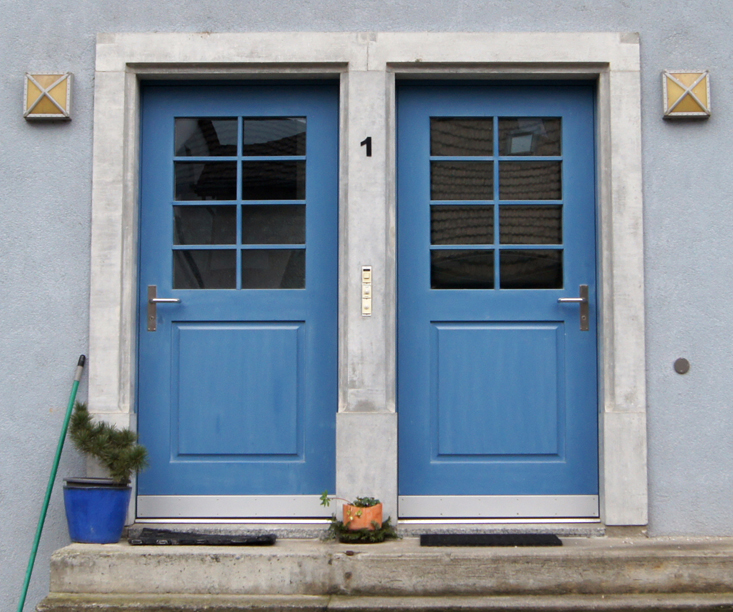
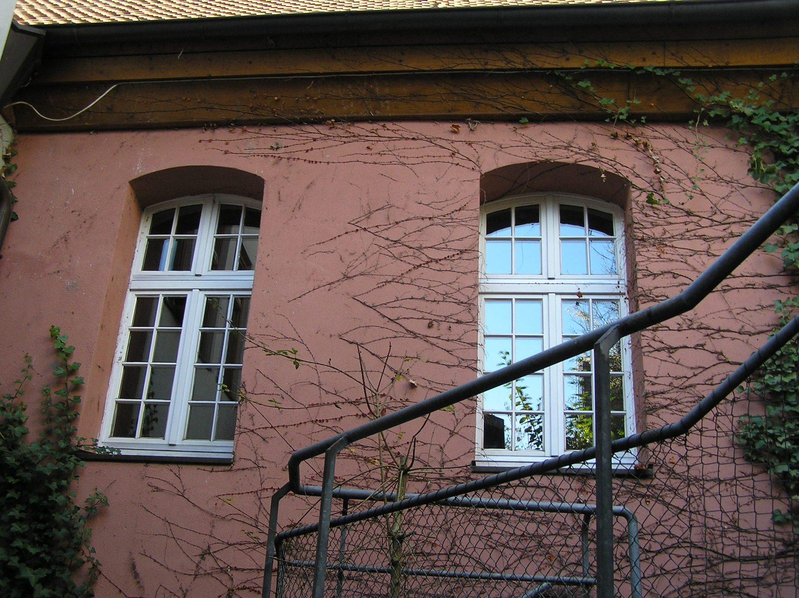
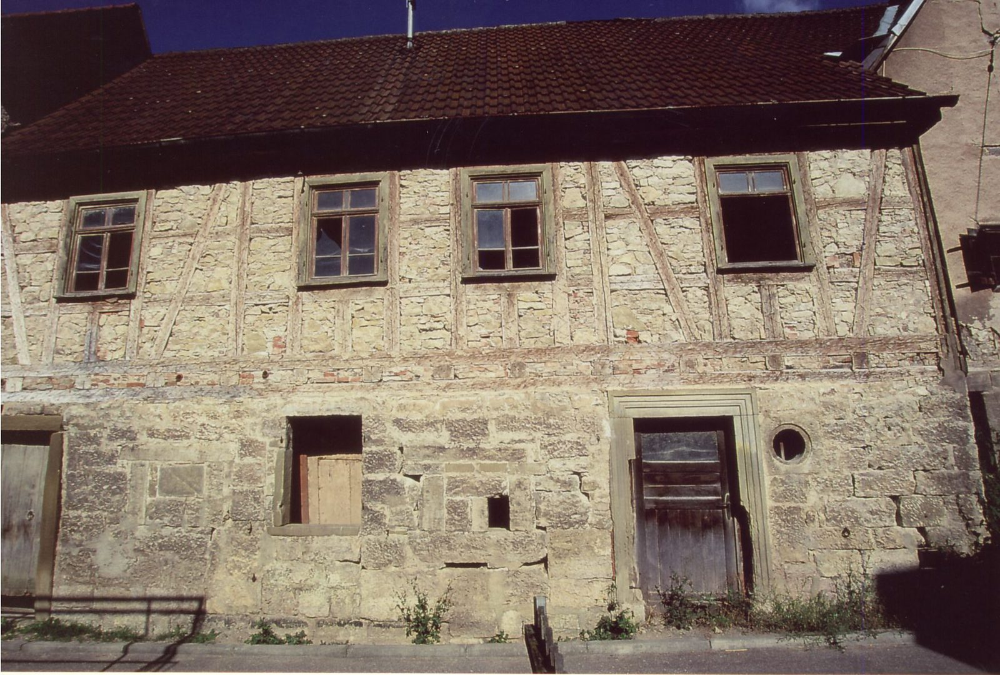
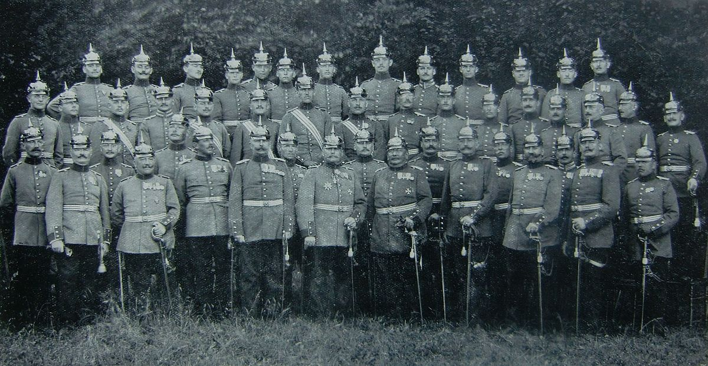
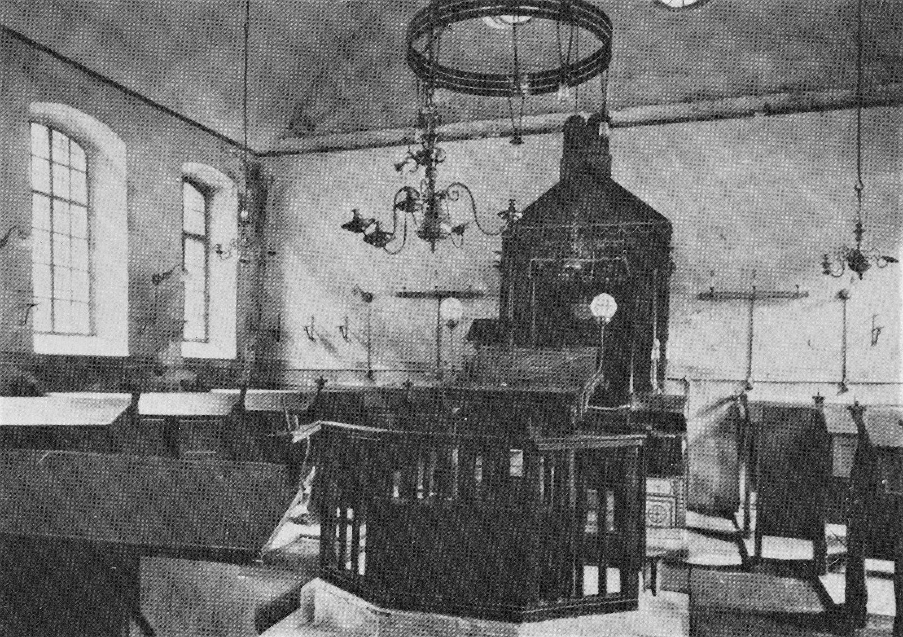
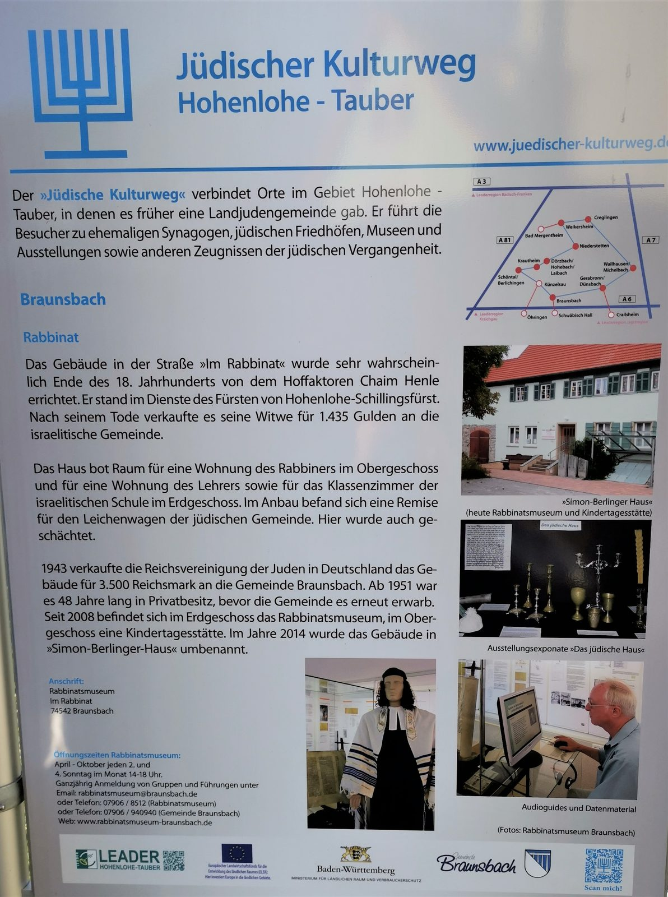
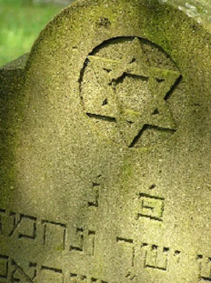
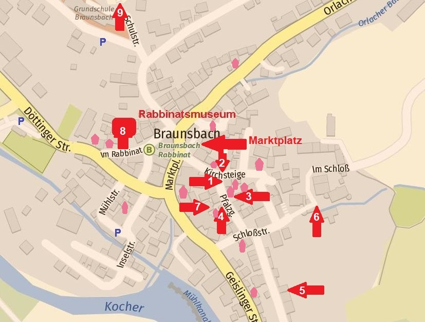
Braunsbach ist eine der zwölf Stationen auf dem „Jüdischen Kulturweg Hohenlohe-Tauber“.
Im Ort führt der Weg zu neun Stationen, an denen die jüdische Geschichte des Ortes sichtbar wird. Die Stationen sind ausgeschildert. Ferner können Sie über Ihr Smartphone weiterführende Informationen erhalten.
Sie können auch über das Rabbinatsmuseum eine Führung bestellen (rabbinatsmuseum
Der Weg ist ca. drei Kilometer lang. Er kann als Rundweg mit beliebigem Anfang gegangen werden. Die letzte Station (Jüdischer Friedhof) liegt auf dem Schaalberg, ca. 120 Höhenmeter über dem Ort. Markierungsschilder mit dem Symbol einer blauen Menora auf weißem Grund kennzeichnen seinen Verlauf.
Wir wünschen Ihnen einen lehrreichen Aufenthalt auf den jüdischen Spuren in Braunsbach.
In Braunsbach gab es vom Beginn des 17. Jh. bis 1942 eine jüdische Gemeinde. Ihre Mitglieder stellten zeitweise ein Drittel der Ortsbevölkerung. Sie trugen vor allem im 19. Jh. wesentlich zum wirtschaftlichen Aufschwung des Ortes bei.
Im Jahre 1933 lebten noch 49 Juden im Ort. Es gab mehrere jüdische Viehhandlungen, ein Kleider- und Stoffgeschäft, ein Kolonialwaren- und Manufakturgeschäft sowie einen Immobilienhändler. Der überregionale Handel sowie die internationalen familiären Verflechtungen eröffneten der jüdischen wie der christlichen Bevölkerung eine erweiterte Perspektive. Jüdische Religion und Tradition hinterließen bis heute im Ortsbild vielfältige Spuren.
Wir stehen hier auf dem Marktplatz. Hier wurde über Jahrhunderte der Viehmarkt abgehalten, der viele jüdische Händler anzog. Von hier wurden aber auch die letzten Juden einer einst großen jüdischen Gemeinde abtransportiert und in den Tod geschickt.
Auf den ersten Blick sieht der unbefangene Besucher keine Anzeichen für jüdische Geschichte. Doch weil es kein Ghetto im Dorf gab, standen selbstverständlich auch am Marktplatz jüdische Häuser.
So z.B. Haus 1, heute Sanitärgeschäft Wolf. Hier wohnte Familie Adler. Koppel Adler war ein angesehenes Gemeindemitglied. Er war im Talmudverein und spielte Geige. Er hatte 11 Kinder. Sohn Leopold, von Beruf Kantor und Lehrer, wanderte 1939 nach Amerika aus. Von hier schickte er seinen Schwestern u.a. Kleider. So konnte Sarah am Sabbat durch Braunsbach spazieren und sagen: „Was kann ich dafür, dass ich so a schön’s Judenmädle bin“.
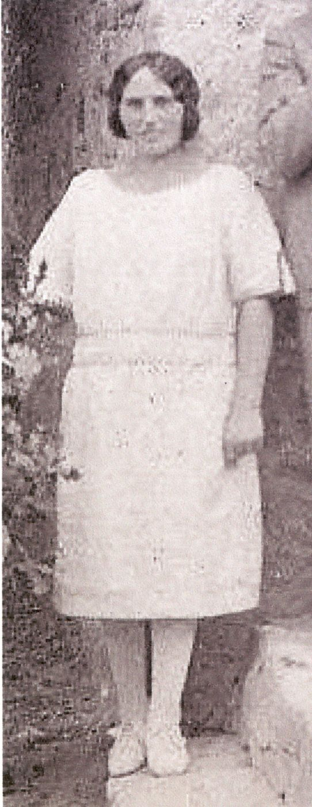
Haus 3: Hier lebte Familie Salomon Sahm. Sohn Moses und Tochter Cilly mit Familie wanderten 1938 nach Palästina aus und gründeten gemeinsam mit Rexinger Juden den Kibbuz Shave Zion im Norden des Landes.
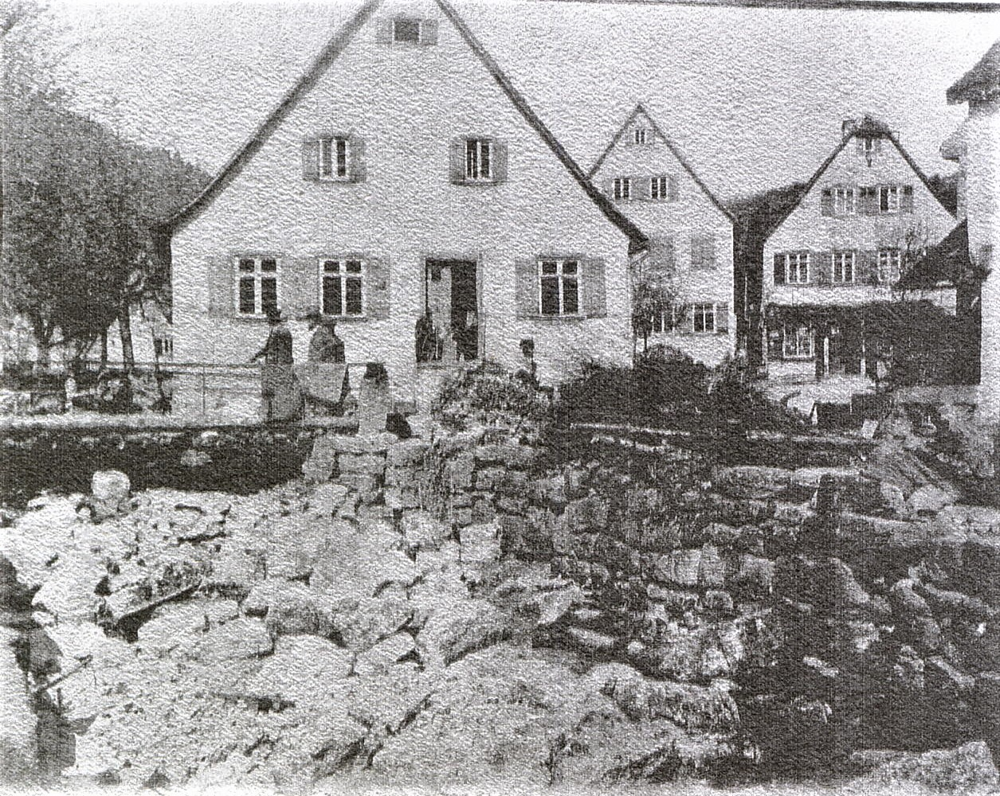
Am benachbarten Hafenmarkt stand das Haus des Viehhändlers Falk Sahm (genannt „Lederfalk“). Er war 1940 nach Heilbronn ins Altersheim gebracht worden und 1942 nach Maly Trostinec deportiert worden, wo er ermordet wurde. In seinem ehem. Felllager wurden die letzten Juden Braunsbachs bis zu ihrem Abtransport 1942 kaserniert.
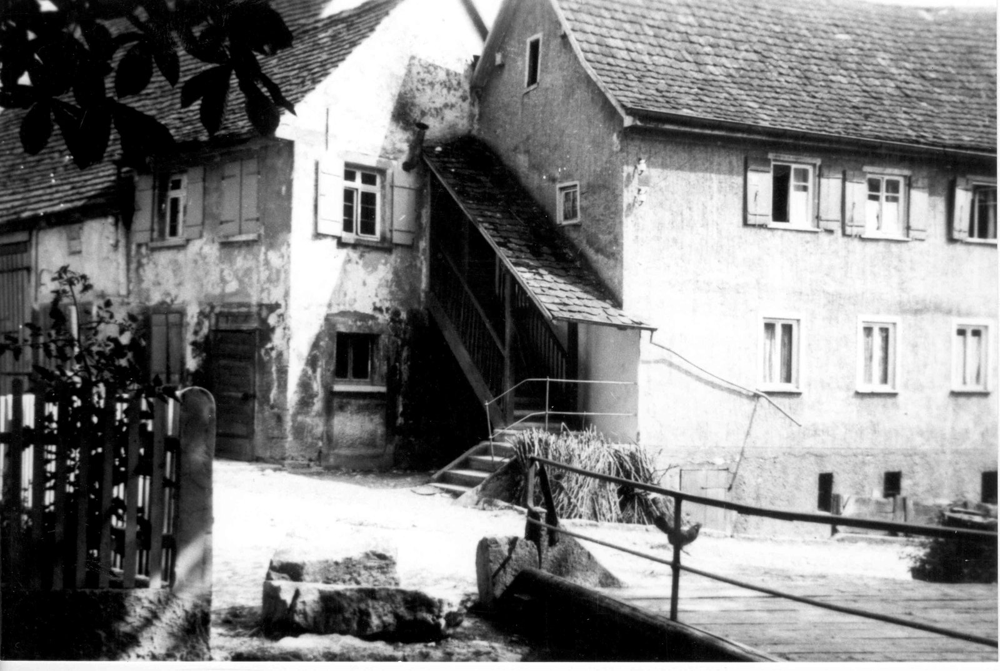
Eine „Judengasse“ gab es seit dem Mittelalter in zahlreichen Orten. Hier lebte und arbeitete die jüdische Bevölkerung. Das Zusammenleben in einem Bezirk war oft in der Notwendigkeit des Schutzes der ansässigen „Schutzjuden“ begründet. Es beruhte vor allem auf religiösen Prinzipien; z.B. auf dem Gebot, am Sabbat nicht mehr als eintausend Schritte zur Synagoge zu gehen. In größeren Orten oder in den Städten gab es deshalb in jedem Wohnbezirk eine Synagoge. Auch in Braunsbach stand die Synagoge in der Nähe der Judengasse.
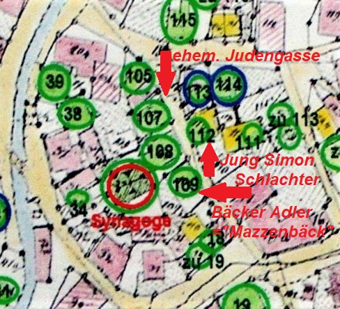
Obwohl die Juden nicht in den Zünften zugelassen waren, arbeiteten sie in vielen verschiedenen Berufen. Gemäß ihrer Speisegebote hatten die Juden eigene Schlachter und Bäcker.
Sie verfügten über einen Rat, der sie gegenüber der Herrschaft vertrat. So bildeten sie quasi einen eigenen Ort im Ort, jedoch ohne Abgrenzung oder Ausgrenzung von den übrigen Mitbürgern. Dies sieht man sehr gut auf dem Plan von Braunsbach aus dem Jahre 1828. So wohnte im Haus Nr. 109 (heute: Pfalzgasse 10) ein Bäcker, im Haus Nr. 112 ein Schlachter.
Die Häuser in der ehem. Judengasse / heute: Pfalzgasse sind natürlich im Laufe der Zeit umgebaut worden. Früher hatten viele Häuser Balkone/Veranden, auf denen die jüdischen Bewohner alljährlich ihre Sukka, ihre Laubhütte, aufbauten, in der sie das siebentägige Laubhüttenfest feierten und mitunter sogar übernachteten. In der Hohenloher Mundart wurde daraus das Siggesle. Bei Sonnenaufgang verrichtet der gläubige jüdische Mann, bekleidet mit seinem Gebetsschal und den Gebetsriemen, sein Morgengebet. Er kann das überall tun; nach Möglichkeit betet er unter freiem Himmel, also gerne auch im Siggesle.
In der Judengasse gab es sogar ein kleines Kurzwarengeschäft (Frau Wertheimer?).
Lippman Jetel (Jachiel) lebte als Schutzjude in der zweiten Generation in Braunsbach. Wahrscheinlich war er ein Viehhändler, wie so mancher seiner Nachfahren. Viele wanderten nach Amerika aus.
Julius Lippman (geb. 1853) wanderte mit seinen Brüdern 1881 nach Amerika aus. Allerdings kehrte er nach Deutschland zurück und gründete hier eine Familie. Er starb 1915 und hinterließ eine Tochter.
In Braunsbach gab es kein Ghetto. Juden lebten in Nachbarschaft mit ihren christlichen Nachbarn. Kleinigkeiten am Haus verrieten, dass sie eine andere Religion hatten. So hatten ihre Häuser im Türrahmen eine sog. „Mesusakerbe“, in der sich eine Kapsel mit einer kleinen Schriftrolle befand.
Im Haus Kirchsteige 2 wohnten Ende des 19./Anfang des 20. Jh. zwei jüdische Familien: Wertheimer und Wollenberger. Deshalb waren im Türrahmen auch zwei Mesusa-Kerben.
Bereits im Mittelalter gab es Gesetze, die die Trennung der Lebensbereiche von Juden und Christen verlangten. Sie sollten z.B. nicht beieinander wohnen.
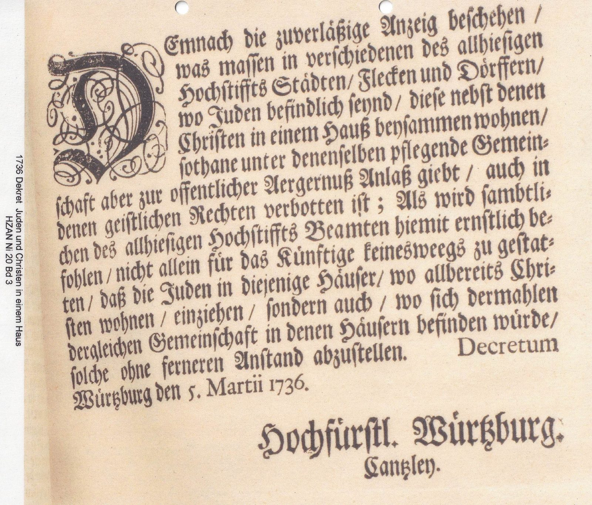
Anfänglich durften Juden weder Häuser noch Land besitzen. Sie behalfen sich, indem sie sich bauwilligen Christen als Geldgeber anboten und danach einen Hausteil mieteten. Weil sie nicht beieinander wohnen sollten, baute man für das Haus zwei Eingänge. Das Haus wurde im Inneren entweder horizontal oder vertikal geteilt. So kam es zu „Doppeltürhäusern“, in denen verschiedene Konfessionen zeitweise „unter einem Dach“, aber doch getrennt voneinander wohnten.
Später konnten Juden auch das ganze Haus oder einen Teil käuflich erwerben. An der Wohnsituation änderte sich grundsätzlich nichts.
Auch in Braunsbach gab es dafür einzelne Beispiele, z.B. Inselstr., ehem. Haus Schlachter und Nachbarhaus: Hier wohnten bis 1931 Abraham Schlachter und Lazarus Schlachter.
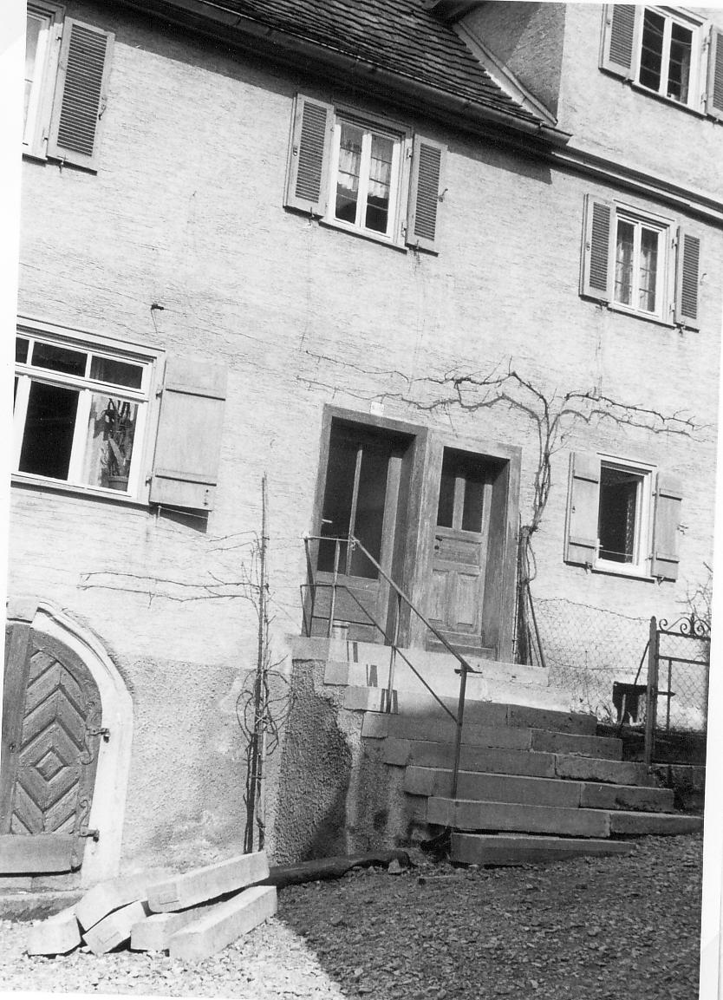
In dem Doppeltürhaus in der Pfalzgasse wohnte ein Lehrer Adler. Auch Simon Berlinger lebte während seines Schuldienstes 1937/38 in diesem Haus.
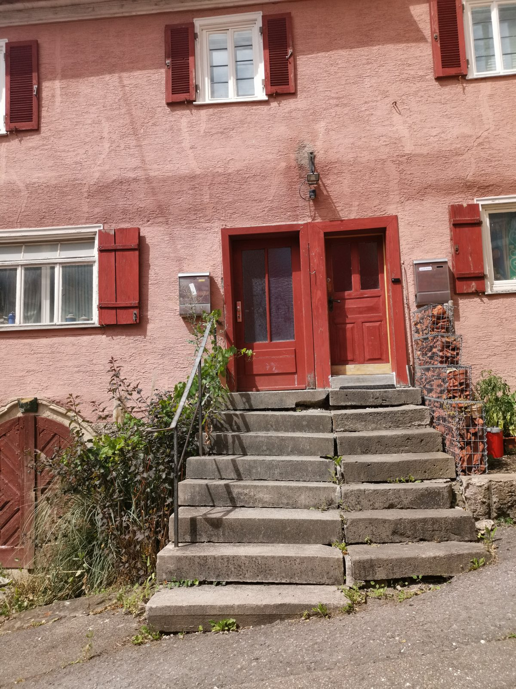
Das Wort bedeutet Türpfosten. Es bezeichnet eine Kapsel im Türpfosten jüdischer Häuser und Wohnräume, die ein Pergament beinhaltet. In den so gekennzeichneten Räumen ist es erlaubt zu essen und zu schlafen. Auch an Synagogen findet man eine Mesusa.
Die Mesusa wird in Armreichweite im oberen Drittel des (von außen gesehen) rechten Türpfostens geneigt angebracht, und zwar so, dass das obere Ende zum Raum zeigt. Die Begründung für diese Art der Anbringung ist sehr unterschiedlich.
Auf dem Pergament ist das Gebet Sch’ma Israel aufgeschrieben:
(Deut 6,4 ff)
Der Abgang zur Synagoge war das sog. Judenstäffele.
Da sie bei der Sturzflut 2016 auch Schaden genommen hatte, musste sie renoviert werden. Bis dahin konnte der Betrachter einen eindrucksvollen Blick auf ihre Südseite mit den prägnanten Rundbogenfenstern werfen.
Auf dem Bild aus den 1950er Jahren ist noch deutlich das Vordach über dem Eingang zur Mikwe zu erkennen.
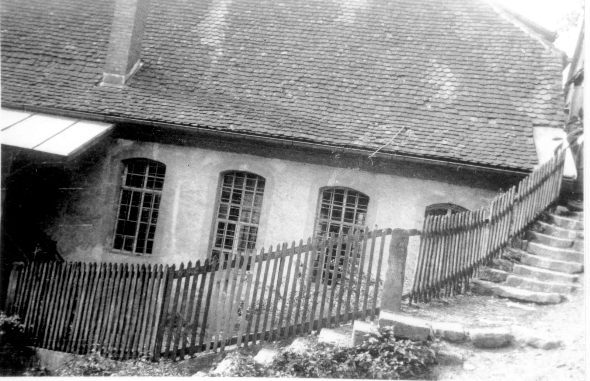
Auch heute herrscht hier noch eine feuchte Atmosphäre, so dass man sich den Ursprung des in früheren Zeiten notwendigen lebendigen Wassers vorstellen kann.
Kuriosität am Rande: Als man 2018 im Rahmen der Sanierungsarbeiten hier eine Baugrube ausgehoben und für weitere Arbeiten vorbereitet hatte, war sie über Nacht mit Wasser vollgelaufen, obwohl es keinen Tropfen geregnet hatte.
Das Armenhaus entwickelte sich in der Frühen Neuzeit aus dem mittelalterlichen Hospitium und Spital. Es war oft gekoppelt mit einem Waisenhaus, einem Gefängnis, einem Krankenhaus und einem Arbeitshaus.
In Armenhäusern lebten vor allem ältere Menschen, die nicht mehr selbst für ihren Lebensunterhalt sorgen konnten. Sie erhielten dort einen Wohnplatz und tägliche Verpflegung. Die Armenhäuser gehörten früher zum Stadtbild und nahmen nur verarmte Bewohner aus der eigenen Stadt auf. Fremden wurde diese Altersversorgung nicht zuteil. Im Gegensatz zu den Arbeitshäusern waren die Armenhäuser in der Regel keine geschlossenen Anstalten und die Aufnahme freiwillig.
Finanziert wurden Armenhäuser in der Regel durch Zuwendungen wohlhabender Bürger sowie durch Zuschüsse von Stadt und Kirche. So machte Moses Löb Rosenstein 1867 eine Stiftung für Arme der jüdischen Gemeinde Braunsbach. Auf dem Land wurde die Armenversorgung teilweise auch aus dem gemeinschaftlichen Gut (Allmende) beglichen.
Das Armenhaus der jüdischen Gemeinde Braunsbach befand sich im ehem. Haus Nr. 10 in der Raingasse (heute: Nr. 13). Als Besitzer sind von 1840 bis mindestens 1875 je zur Hälfte die „Judenschaftsgemeinde“ und verschiedene Privatleute eingetragen.
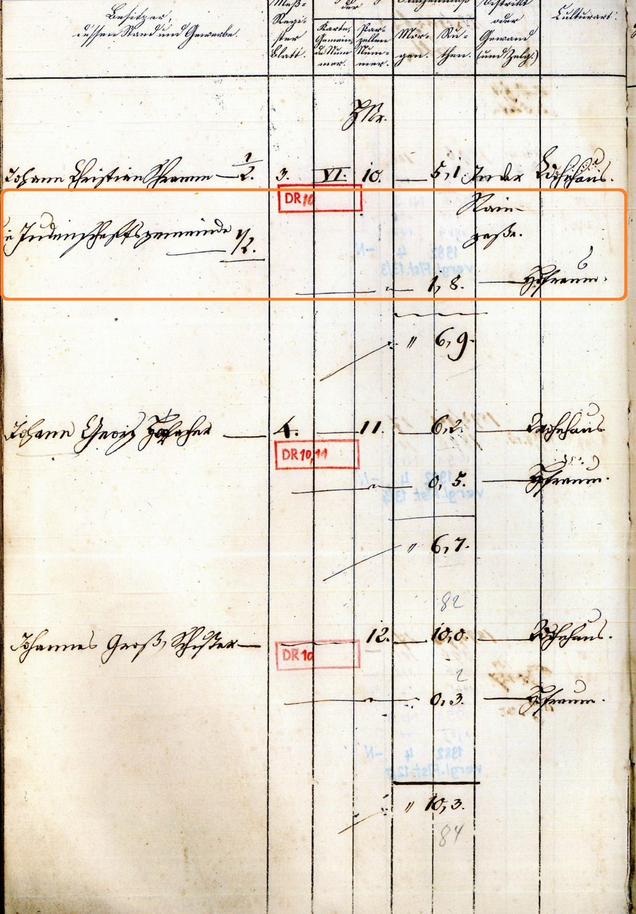
Nach den Unterlagen des Gemeindearchivs Braunsbach betrug der jüdische Anteil am Areal ca. 50 m². Bis in unsere Zeit wurde das Gebäude 13/4 als das jüdische Armenhaus angesehen.
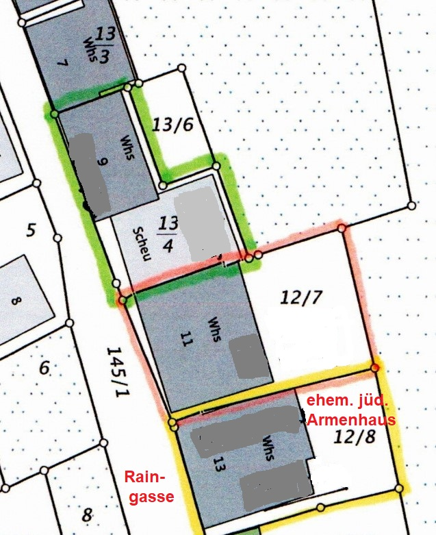
Wahrscheinlich lebte Elias Frey (1887-1938) hier einige Zeit. Seine Eltern waren verstorben und die Geschwister hatten Braunsbach verlassen. Er konnte keiner geregelten Arbeit nachgehen und verwahrloste vollständig. Auf Anweisung des Bürgermeisters und des örtlichen Arztes musste sein in Schwäbisch Hall lebender Bruder ihn 1936 in die Heilanstalt Grafeneck bei Zwiefalten bringen, wo er 1938 starb.
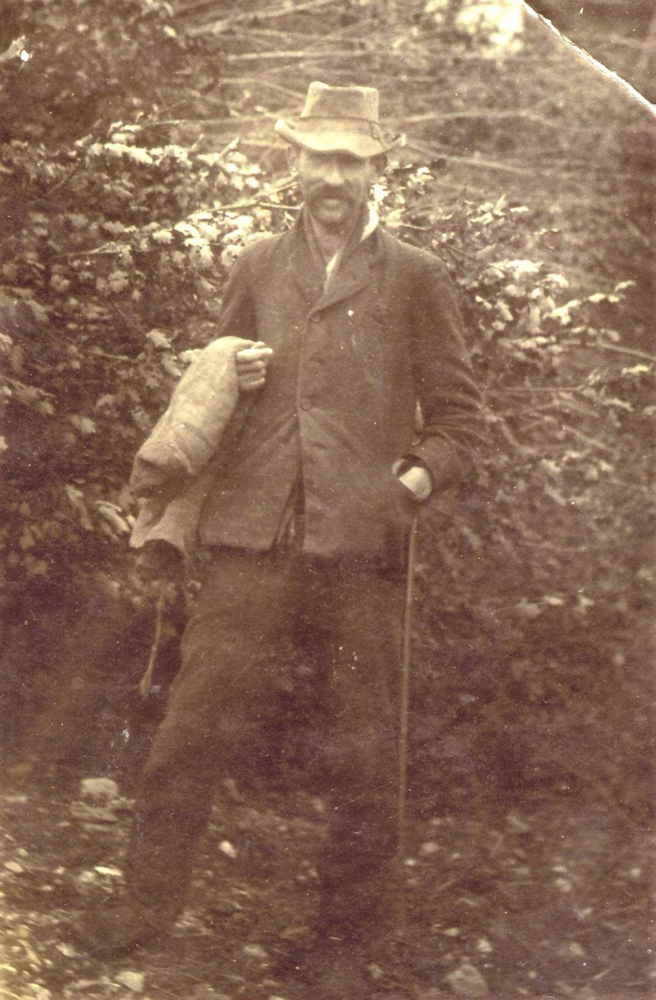
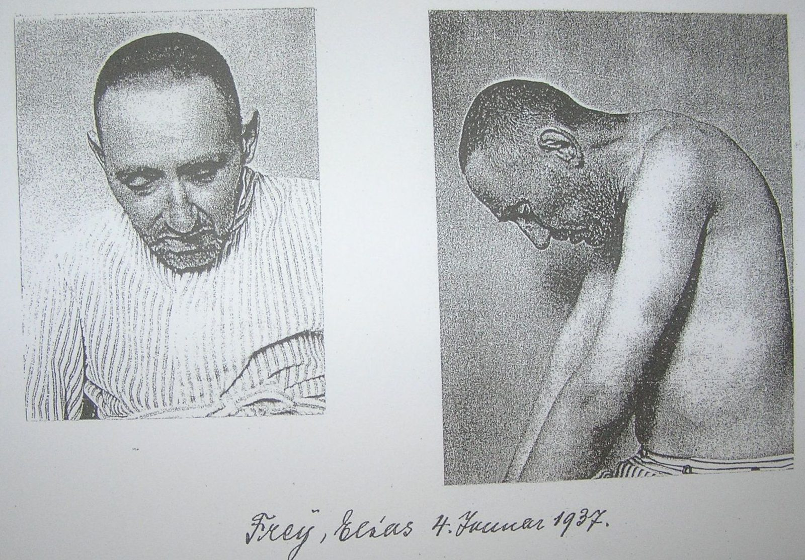
Unmittelbar vor Beginn des 1. Weltkrieges beschwor Kaiser Wilhelm II. in seiner sog. 2. Balkonrede am 1. August 1914 die nationale Einheit des deutschen Volkes.
Darin gelobte er mit feierlicher Gebärde: „Ich kenne keine Parteien und auch keine Konfessionen mehr. Seien wir heute alle deutsche Brüder und nur noch deutsche Brüder“.
Viele Juden werteten den Krieg als eine Chance, ihre Vaterlandsliebe zu beweisen. Sie hofften, durch Pflichterfüllung und Opferbereitschaft die volle Integration in die deutsche Gesellschaft zu erreichen.
Sie wurden in dieser Haltung von verschiedenen jüdischen Verbänden unterstützt.
Schließlich nahmen ca. 100.000 deutsche Juden am Krieg teil. 12.000 verloren ihr Leben.
1918 erhielt der Braunsbacher Rabbiner Dr. Jakob Berlinger das Wilhelmskreuz. Diese Auszeichnung hatte König Wilhelm II. 1915 für die Männer gestiftet, die sich während des Ersten Weltkriegs, ohne daran unmittelbar teilgenommen zu haben, in dienstlicher oder freiwilliger Tätigkeit namhafte Verdienste um die öffentliche Wohlfahrt erworben hatten.
30.000 Juden hatten im 1. Weltkrieg Auszeichnungen wie z.B. das Eiserne Kreuz erhalten. Sie hofften noch nach 1933, dass ihre Verdienste im 1. Weltkrieg sie vor der nationalsozialistischen Verfolgung schützen würden. Leider vergeblich!
Mit „Eisernen Büchern“ wollten Gemeinden in ganz Deutschland ihren Kriegsteilnehmern ein Denkmal setzen. In Braunsbach führte Hauptlehrer H. Kirchner in den 1920er-Jahren den Gedenkband.
Das Buch ist in Leinen gebunden und mit zwei eisernen Spangen zu verschließen. An der Unterseite befinden sich eiserne Nieten. Der erste Hauptteil bildet die Kriegerehrung; hier sind die Mitkämpfer genannt. Viele schwarz-weiße Passbilder unter den aufgeführten Namen zeigen junge Männer mit ernstem Gesicht. Aufgenommen wurden auch jüdische Mitbürger.
Die Seiten sind mit einem oben und unten verlaufenden grün-schwarzen Schmuckband gestaltet. Auf jedem Blatt ist ein Schwert als Wasserzeichen dargestellt.
So wird Isaak Heumann, geboren am 12. Juni 1887 in Braunsbach, am 15. Januar 1915 in die 5. Kompagnie des Infanterieregiments 414 eingezogen und kämpft in Lothringen, Ypern und Verdun. Seine Hoffnung, ebenso wie die vieler seiner Glaubensbrüder, damit die Integration ins deutsche Volk zu erreichen, wurde bitter enttäuscht. Am 1. Dezember 1941 wird Heumann als einer der letzten sieben Juden in Braunsbach nach Riga deportiert und später für tot erklärt.
In einem weiteren Teil werden die im Kampf gefallenen Helden aufgeführt. Darunter auch Isaak Sahm.
Besuchen Sie das restaurierte Kriegerdenkmal für die Gefallenen des 1. Weltkrieges in der Schlossstraße gegenüber der Evangelischen Kirche!
Das Kriegerdenkmal für die Gefallenen des Ersten Weltkrieges steht seit 1922 unterhalb des Schlosses von Braunsbach gegenüber der Evangelischen Kirche. Vor seiner Zerstörung durch eine Sturzflut im Mai 2016 bestand es aus einer zentralen, giebelbekrönten Namenstafel mit Eisernem Kreuz und Kriegsdaten im Giebel, flankiert von niedrigeren Blumenterrassen mit Kugelaufsätzen auf den Brüstungen und Steinbänken davor.
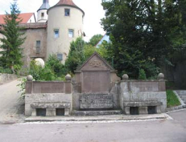
Im Jahre 2023 wurde es restauriert und an dem alten Platz wieder errichtet.
Auf der Tafel steht in der mittleren Spalte ganz unten der Name Sahm, Isaak. Er wurde am 26.12.1893 in Braunsbach als jüngster Sohn Abraham Sahms geboren. 1913 wurde er als Füsilier in die 11. Kompanie des Infanterieregiments 122 eingezogen. Er folgte damit – wie viele seiner Glaubensbrüder – den Aufrufen des Kaisers und des Reichsvereins der Deutschen Juden.
Am 18. September 1914 trat das Infanterieregiment 122 gegen die Franzosen an. Isaak Sahm fiel am ersten Tag der großen Offensive am 22. September bei Montblainville, Arrondissement Verdun.
Sein Name ist auf der Ehrentafel des Eisernen Buches der Gemeinde Braunsbach verzeichnet.
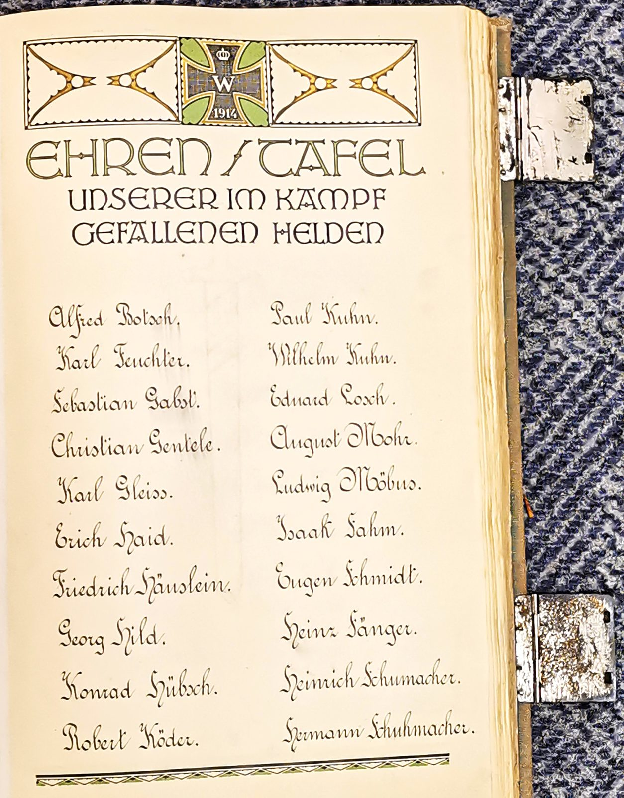
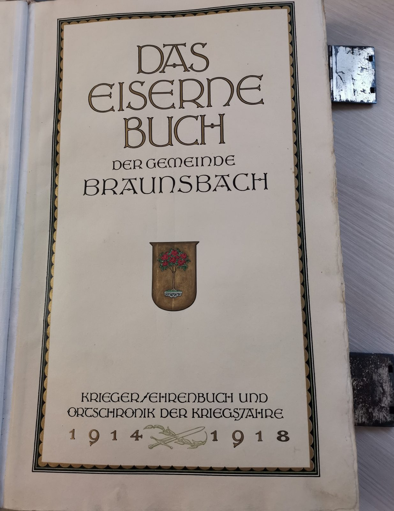
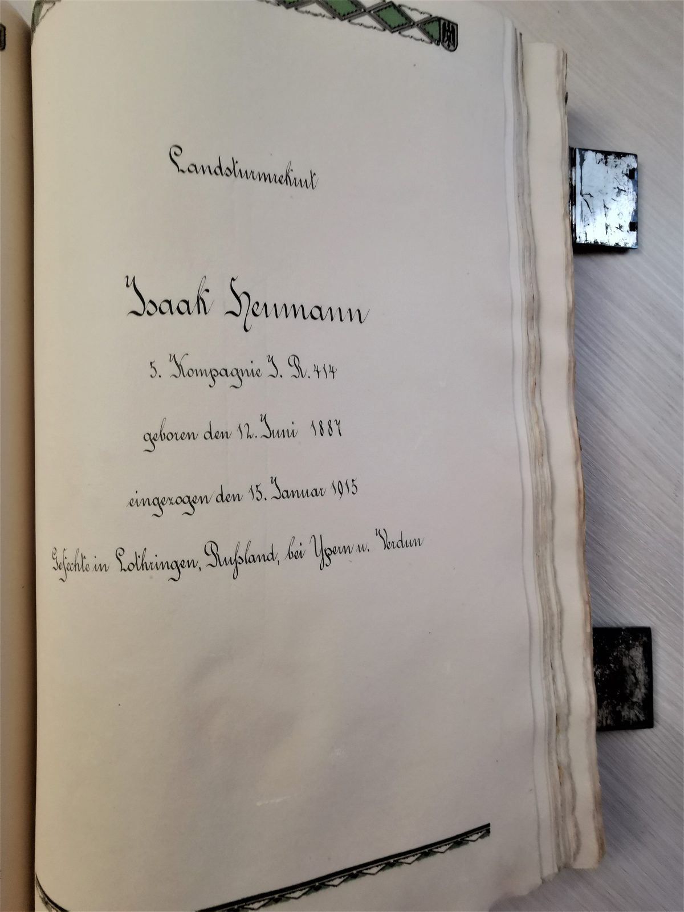
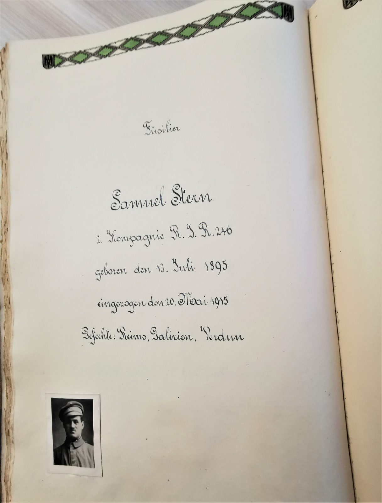
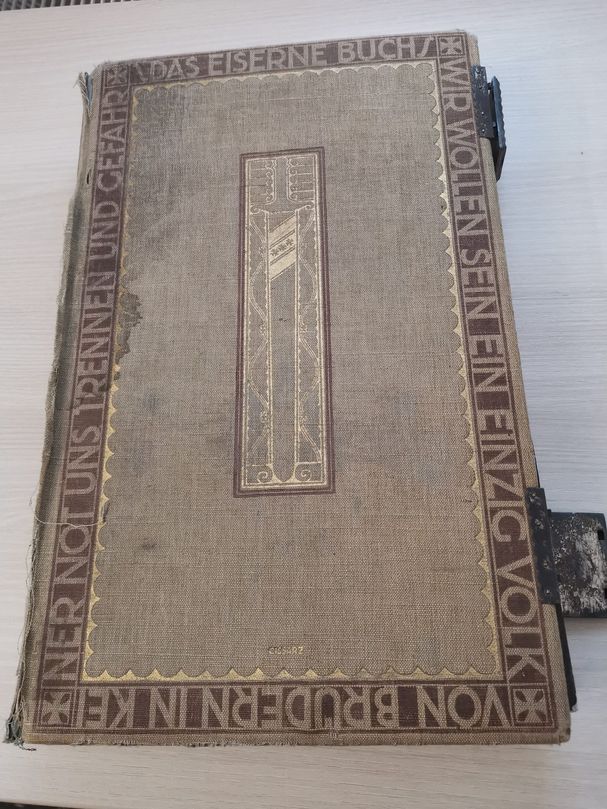
Eine Synagoge ist die wichtigste Einrichtung im Judentum. Sie dient als Gebäude für Versammlungen, gemeinsamen Gottesdienst und als Lehrhaus. Im Jiddischen wird sie deshalb auch „Schul“ genannt. Sie ist kein geweihter Raum.
Synagogen haben keinen einheitlichen Grundriss. Sie werden im architektonischen Stil ihrer Zeit und des Ortes gebaut, an dem sie errichtet werden. Im Inneren haben sie dagegen gemeinsame Merkmale. An der Wand in Richtung Jerusalem befindet sich der Thoraschrein (=Aron ha-kodesch), in dem mindestens eine Thorarolle aufbewahrt wird. Über ihm sind nicht selten eine symbolische Darstellung der Gesetzestafeln (=10 Gebote) und ein Ewiges Licht angebracht. In traditionellen Synagogen befindet sich in der Mitte des Innenraums ein Lesepult (=Almemor oder Bima), von dem während des Gottesdienstes aus der Thora vorgelesen wird. Ferner gibt es einen für die Frauen abgesonderten Raum; z.B. die Frauenempore.
An Rosch ha-Schana, dem jüdischen Neujahrsfest, und 10 Tage später zu Jom Kippur, dem Versöhnungstag, wurde das Schofar geblasen.
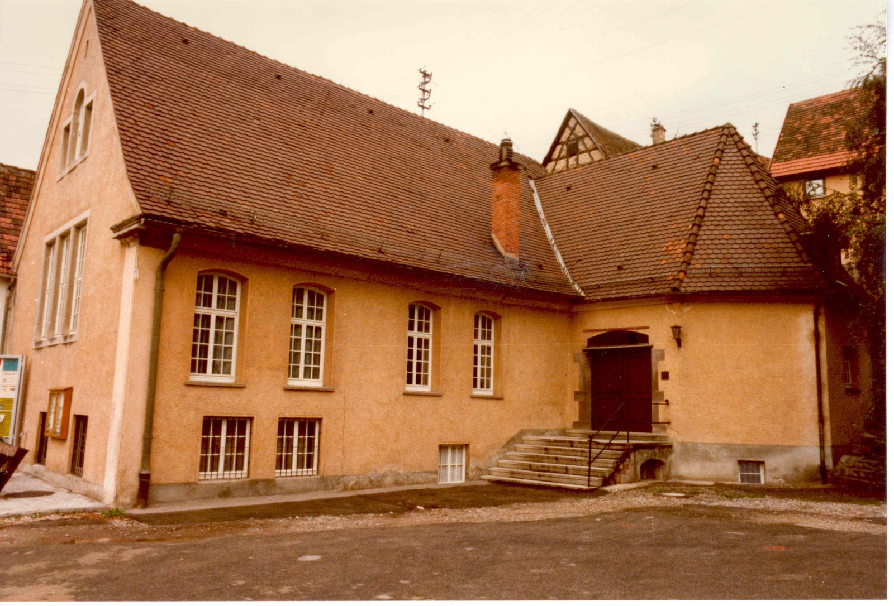
Die ehemalige Synagoge trägt den Namen des früheren jüdischen Mitbürgers Moses Löb Rosenstein.
Er wurde am 7. Januar 1808 als Sohn des Viehhändlers Abraham Moses und seiner Frau Klärle in Braunsbach geboren.
Früh verwaist ging er 1822 nach Frankfurt/M., wo er ab 1845 als selbständiger Handelsmann tätig war. 1852 beantragte er das Bürgerrecht und legte 1853 den Bürgereid ab.
Er heiratete 1854 die Witwe Charlotte Meyer geb. Cohn aus Hamburg, die 1865 starb. Danach heiratete er Emma Therese Drucker aus Wiesbaden. Beide Ehen blieben kinderlos.
Am 22. April 1867 machte Moses Löb Rosenstein sein Testament, worin er u.a. die Gemeinde Braunsbach bedachte. Moses Löb Rosenstein starb am 27. April 1867.
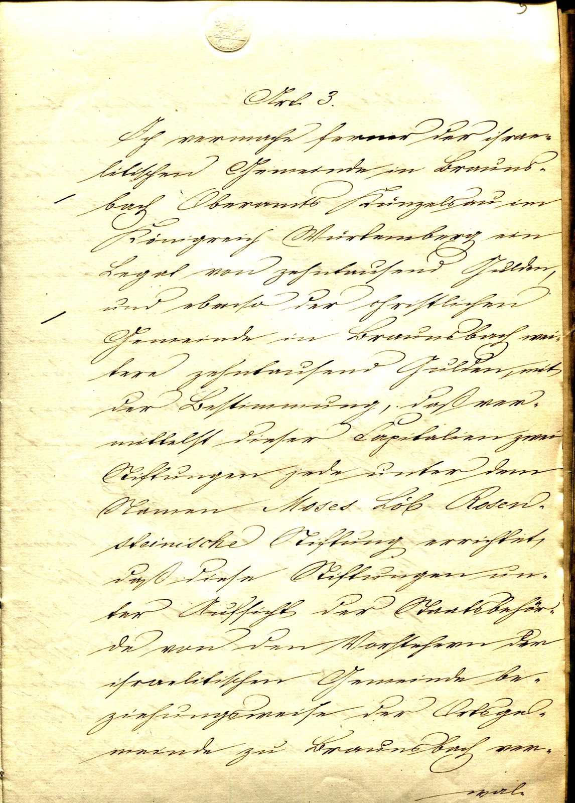
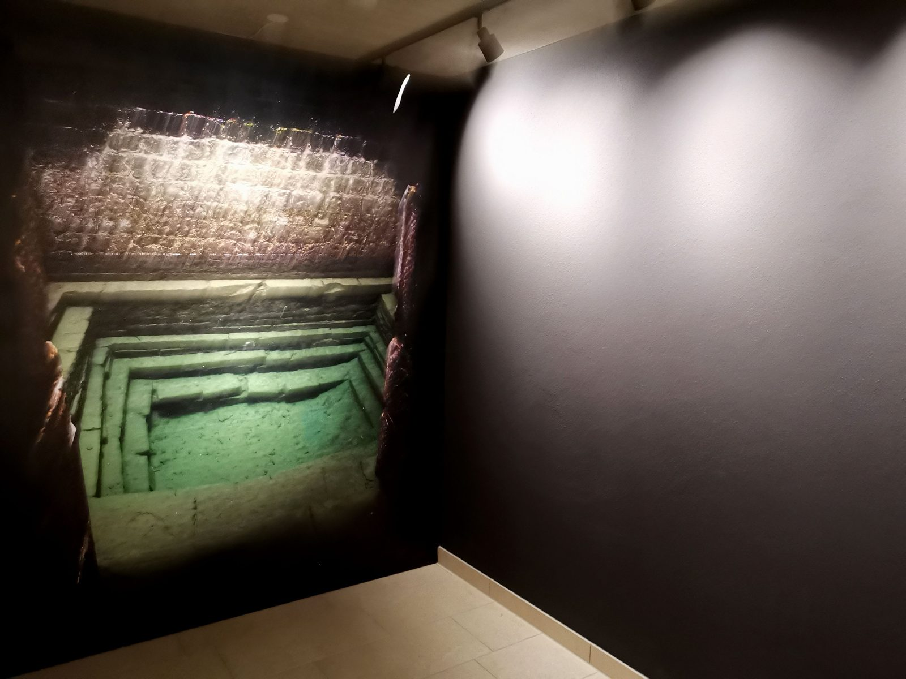
Die Mikwe ist im Judentum ein Tauchbad für die rituelle Reinigung. Ihr Wasser dient nicht der Hygiene, sondern der Reinigung der Seele und des Geistes.
Das Becken muss so groß sein, dass ein Erwachsener vollständig im Wasser untertauchen kann. Es fasst zwischen 500 und 1000 Liter. Sieben Stufen führen in das Becken hinab.
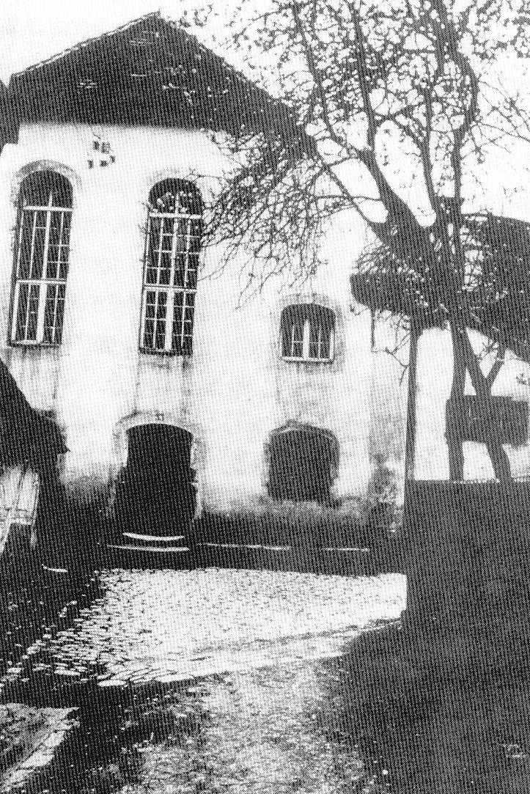
Das Wasser muss „lebendiges“ Wasser sein, d.h. es muss natürlichen Ursprungs sein. Als solches gilt nur Quell-, Grund- oder Regenwasser.
Wasser wird als Symbol des Ursprungs angesehen. Deshalb bedeutet das Untertauchen in ihm eine Art Neugeburt. Das Wasser der Braunsbacher Mikwe wurde aus dem Schlossbach eingeleitet.
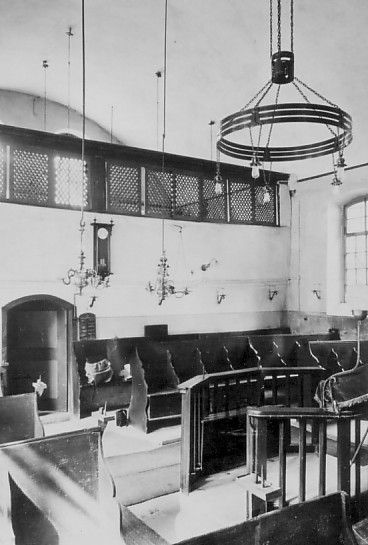
Frauen und Männern ist der Besuch der Mikwe vorgeschrieben. Anlass für die Benutzung ist der Kontakt mit Unreinem; z.B. mit Blut oder einem Toten. Um die Reinheit ihrer Ehe herzustellen, besucht eine Frau nach der Geburt eines Kindes oder nach dem Ende ihrer Menstruation die Mikwe. Vor der Hochzeit gehen die Brautleute hierher, um den Beginn eines neuen Lebensabschnittes zu dokumentieren. Orthodoxe männliche Juden benutzen die Mikwe vor dem Beginn des Sabbat und vor allem vor dem Beginn des Versöhnungsfestes Jom Kippur. Bevor der Schreiber die Anfertigung einer neuen Thorarolle beginnt, reinigt er sich in der Mikwe.
Bei der Reinigung darf nichts Fremdes am Körper sein; jegliche Art von Bekleidung und auch Schmuck, Lippenstift, Nagellack und Ähnliches sind vor dem Baden abzulegen. Nachdem man sich vollständig gereinigt hat, steigt man einzeln und völlig unbekleidet ins Wasser. Der Körper muss vollständig von den Haaren bis zu den Fußsohlen untergetaucht werden.
Eine Mikwebetreuerin/ein Mikwebetreuer teilt zum Abschluss mit, ob das Tauchbad „koscher“ (=gültig) war.
Noch im Wasser spricht man den Segensspruch: „Gelobt seist Du, Ewiger, unser Gott, König der Welt, der uns durch Seine Gebote geheiligt hat, und der uns das Untertauchen befohlen hat.“
2004 gründeten Hans K. Schulz und Wolfgang Kuhn einen Förderverein zur Rettung des denkmalgeschützten Hauses. Ziel sollte die Nutzung als „Bildungshaus“ sein.
Nach Beendigung der Renovierungsarbeiten wurde als Erstes im Erdgeschoss das „Rabbinatsmuseum“ eingerichtet und 2008 eröffnet. In den Räumen der ehemaligen israelitischen Schule werden die Geschichte der Landjudengemeinde Braunsbach sowie Grundzüge der jüdischen Religion dargestellt.
Einige Jahre später zog das „Wichtelnest“, eine Betreuungseinrichtung für Kleinkinder, in die erste Etage ein, wo sich früher die Wohnung des Rabbiners befand. Hier gibt ein Wandschrank mit reichen Bemalungen Rätsel auf, welche Funktion er früher hatte.
Der Gewölbekeller im Untergeschoss bietet Raum für gesellige Treffs der Jugendlichen des Ortes. Was hier sehr verwundert, ist die Tatsache, dass es im Türrahmen eine Mesusakerbe gibt, die normalerweise nur an Haustüren und an Türen im Wohnbereich eines Hauses zu finden ist.
Die zum Hauptgebäude gehörende Remise diente früher als Raum zum Schächten und als Abstellort für den Leichenwagen. Heute steht sie dem Rabbinatsmuseum für Sonderausstellungen zur Verfügung.
Vor dem Gebäude wurden 2010 die „Braunsbacher Denksteine“ aufgestellt (Entwurf: Siegfried Kienle, Architekt in Schwäbisch Hall).
Die Braunsbacher Denksteine wurden zum Gedächtnis an alle Bewohner jüdischen Glaubens errichtet, die hier zwischen 1600 und 1942 lebten.
Die drei Stelen bestehen aus heimischem Muschelkalk. Auf ihnen ist jeweils eine zweilagige Glasscheibe mit Namen von ehemaligen jüdischen Bürgern befestigt. Sie stehen stellvertretend für alle Juden aus Braunsbach, die auf Handelswegen in der Region unterwegs waren; die in die Vereinigten Staaten, nach Palästina oder in ein anderes Land emigrierten und die von den Nationalsozialisten deportiert und ermordet wurden.
Zur Symbolik des Denkmals
Ihr Material ist der die Region prägende Muschelkalk. Mit seinen Musterungen und Einschlüssen hat er vergangene Zeiten konserviert. Die Steine weisen jeweils eine schräg nach unten neigende Bruchkante auf – so wie das Zusammenleben der Christen und Juden abgebrochen wurde und zur Neige ging.
Die Steine sind gespalten – auch die jüdische Bevölkerung lebte weitgehend innerlich abgespalten von ihren christlichen Nachbarn. Bis heute spaltet die Frage nach dem Umgang mit der Geschichte die Menschen; auch in Braunsbach. Steine in Verbindung mit Namen waren in der Antike oft ein Bild für die Ewigkeit.
Vor drei Steinen erheben sich drei Glasscheiben: Glas ist transparent, man kann hindurchsehen und vielleicht wie durch eine Brille manches klarer sehen. Aber es ist gefährdet und zerbrechlich, verletzlich und verletzend. Das Zusammenleben von Juden und Christen erwies sich in den letzten Jahrhunderten oft als brüchig. Wir wissen alle von den Verfolgungen und Pogromen, denen Juden in Europa ausgesetzt waren.
Auf den Gläsern ist von den Wegen der Braunsbacher Juden die Rede. Auf dem Weg sein, unterwegs sein – das bedeutet nicht selten unbehaust, heimatlos zu sein. Seit vielen Jahrhunderten lebten die Juden nicht mehr in dem Land, das Gott ihnen nach ihrem Glauben verheißen hatte; sie lebten und leben heute noch oft in der Diaspora. Die Juden, die am Anfang des 17. Jahrhunderts nach Braunsbach kamen, hatten Verfolgung und Vertreibung erlebt; sie erkauften sich den Schutz der hiesigen Herrschaft, da sie nicht in Württemberg, nicht in Hohenlohischem Gebiet und nicht in den Reichsstädten wohnen durften.
Auf den drei Glasplatten sind Namen Braunsbacher Juden stellvertretend für alle aufgeführt, die in der Zeit zwischen 1600 und 1942 hier in unserem Ort lebten. Einen Namen haben heißt etwas bedeuten. Wessen Name vergessen wird, dessen „Angedenken schwindet von der Erde, kein Nachruhm bleibt ihm mehr im Lande“ (Hiob 18,17). Und beim Propheten Isaias heißt es: „Ihnen allen errichte ich in meinem Haus und in meinen Mauern ein Denkmal; ich gebe ihnen einen Namen, …einen ewigen Namen gebe ich ihnen, der niemals getilgt wird.“
Yad Vashem – d.h. ein Name und ein Denkmal! Wer einmal in Israel war, kennt die bekannte Gedächtnisstätte in Jerusalem, die an die Namen der Shoa-Opfer erinnert.
Bis 1740 bestatteten die Braunsbacher Juden ihre Toten auf dem großen Verbandsfriedhof in Schopfloch oder in Berlichingen, je nach ihrem Herkunftsort.
1732 beantragte die israelitische Gemeinde die Erlaubnis zum Ankauf von zwei Äckern auf einem aufgelassenen Weinberg auf dem Schaalberg zur Anlage eines eigenen Begräbnisplatzes.
Am 23. März 1747 erteilte das Domkapitel die Erlaubnis zum Erwerb der Grundstücke.
Als Gebühren wurden festgelegt:
Für einen Erwachsenen betrug sie 2 Gulden 30 Kreutzer, für ein Kind die Hälfte.
Für auswärtige Juden war sie noch höher: für einen Erwachsenen 3 Gulden 45 Kreutzer, für ein Kind 1 Gulden 52 Kreutzer.
Eine Umrechnung ist schwierig: Ein Gulden könnte einen Gegenwert von 1 € bis 1,35 € oder 1 kg Brot im 18. Jh. gehabt haben.
Bis zum Jahre 1806 blieben die Gebühren unverändert.
Bis 1740 bestatteten die Braunsbacher Juden ihre Toten auf dem großen Verbandsfriedhof in Schopfloch oder in Berlichingen, je nach ihrem Herkunftsort.
1732 beantragte die israelitische Gemeinde die Erlaubnis zum Ankauf eines Ackers zur Anlage eines eigenen Begräbnisplatzes.
Obschon das Domkapitel die Erlaubnis zum Erwerb der Grundstücke erst am 23. März 1747 erteilte, fanden hier schon zuvor Beisetzungen statt. Der älteste Grabstein stammt aus dem Jahr 1740.
Fünfzehn Jahre später erstattete der für den Ort zuständige fürstbischöfliche Verwalter dem Domkapitel zu Würzburg einen ausführlichen Bericht über das Gesuch. Als Gelände sollten zwei Flurstücke auf dem Schaalberg dienen. Es handelte sich um aufgelassene Weinberge, die für die Landwirtschaft ungeeignet waren. Die Juden wollten beide Stücke kaufen, die darauf liegenden Gülten und Schatzungen bezahlen sowie für jeden Toten 2 Gulden und für jedes Kind 1 Gulden.
Allerdings wurde die Gebühr höher angesetzt: Für einen Erwachsenen betrug sie 2 Gulden 30 Kreutzer, für ein Kind die Hälfte. Für auswärtige Juden war sie noch höher: für einen Erwachsenen 3 Gulden 45 Kreutzer, für ein Kind 1 Gulden 52 Kreutzer.
Eine Umrechnung ist schwierig: Ein Gulden könnte einen Gegenwert von 1 € bis 1,35 € oder 1 kg Brot im 18. Jh. gehabt haben.
Bis zum Jahre 1806 blieben die Gebühren unverändert.
Wenn ein fremder Jude, meistens ein Bettler, in der Gemeinde starb, zahlte die gesamte Judenschaft die Begräbnisgebühr. Das war auch der Fall bei einheimischen Juden, die meist hochbetagt ohne Verwandte starben. So wurden z.B. bereits 1754 drei Betteljudenkinder auf Kosten der Gemeinde beerdigt.
Schon wenige Jahre nach der Eröffnung wählten auch andere Juden Braunsbach als Beisetzungsstätte, weil es wesentlich günstiger lag als Schopfloch. Da der Platz ausreichte, hatte niemand etwas dagegen.
Die Zahl der Beerdigungen schwankte beträchtlich. Die Kinderzahl, aber auch die Kindersterblichkeit war sehr hoch. Frauen hatten daher meist eine geringere Lebenserwartung als Männer. Ältere Witwen waren die Ausnahme. Junge Witwen wurden rasch wieder verheiratet.
1938 fand die letzte Beisetzung statt. Joseph Falk, ein in die Schweiz ausgewanderter Jude, ließ 1979 einen Gedenkstein für die Opfer der Verfolgung errichten.
Das Kaddisch ist ein Gebet, mit dem Juden Gott loben.
Sie sprechen es in Gottesdiensten und am Lager eines gerade Verstorbenen. Darum heißt es auch Totengebet.
Mit dem Kaddisch möchten Juden Gott nach ihrem Leben auf der Erde noch einmal für alles danken und ihn loben. Als Verstorbene können sie aber selbst natürlich nicht mehr beten. Daher spricht dann ein männlicher Verwandter oft das letzte Kaddisch für sie.
„Erhoben und geheiligt werde sein großer Name in der Welt, die er nach seinem Willen erschaffen, und sein Reich erstehe in eurem Leben und in euren Tagen und dem Leben des ganzen Hauses Israel schnell und in naher Zeit, sprechet: Amen!
Sein großer Name sei gepriesen in Ewigkeit und Ewigkeit der Ewigkeiten!
Gepriesen sei und gerühmt und verherrlicht und erhoben und erhöht und gefeiert und hocherhoben und gepriesen der Name des Heiligen, gelobt sei er, hoch über jedem Lob und Gesang, Verherrlichung und Trostverheißung, die je in der Welt gesprochen wurde, sprechet: Amen!Nimm in Barmherzigkeit und Wohlgefallen unser Gebet an.
Möge Erhörung finden das Gebet und die Bitte von ganz Israel vor seinem Vater im Himmel, sprechet: Amen!Der Name des Ewigen sei gepriesen von jetzt an bis in Ewigkeit!
Fülle des Friedens und Leben möge vom Himmel herab uns und ganz Israel zuteilwerden, sprechet: Amen!Meine Hilfe kommt vom Ewigen, dem Schöpfer von Himmel und Erde.
Der Frieden stiftet in seinen Himmelshöhen, stifte Frieden unter uns und ganz Israel, sprechet: Amen!“
Bis ins 19. Jahrhundert hinein sind jüdische Grabsteine nur auf Hebräisch beschriftet.
Eine hebräische Grabinschrift setzt sich aus mehreren Elementen zusammen: den Namen, den Daten des Verstorbenen/der Verstorbenen, gerahmt von einer Einleitungsformel und einem Schlusssegen, und oft erweitert durch einen Segensspruch.
Die meisten Inschriften beginnen mit einer abgekürzten Einleitungsformel:
Hier ist begraben
Hier ist geborgen
Es folgen der Name (bei Männern oft mit einem Titel versehen, der Auskunft über den gesellschaftlichen Status (z.B. Der Junggeselle, Der Witwer u.Ä.) und innergemeindliche Funktionen gibt), das Sterbedatum sowie das Sterbealter und ein Schlusssegen.
Die Angabe des Geburtsdatums war nicht üblich.
Die Daten werden in den hebräischen Grabinschriften nach dem jüdischen Kalender angegeben.
Gegen Ende des 19. Jh. hat man die Angaben mitunter in lateinischer Schrift auf der Rückseite des Grabsteines verzeichnet.
Die Symbolik auf jüdischen Grabsteinen ist vielfältig und insbesondere bei den älteren Steinen oft auffälligstes Element der Gestaltung. Auf manchen Friedhöfen in Süddeutschland ist fast jeder Grabstein mit Symbolik und Ornamentik geschmückt.
Die Symbolik ist in zwei Kategorien zu unterteilen: in jüdische Symbole und solche, die von der Umgebung übernommen wurden. Diese müssen wiederum unterschieden werden von allgemeiner Ornamentik, insbesondere vielfältigen pflanzlichen und floralen Motiven ohne tiefere Bedeutung. Zu den jüdischen Symbolen zählen solche, die auf die Abstammung hinweisen, für ein Ehrenamt in der Gemeinde stehen oder Eigenschaften wie große Gelehrsamkeit und hohes Ansehen hervorheben. Andere symbolisieren den Namen des Verstorbenen oder deuten als allgemein jüdische Symbole auf sein Judentum.
Zu den häufigsten Symbolen zählen diejenigen, die für die Abstammung von den alten Geschlechtern der Kohanim und der Leviten stehen. Diese waren im Tempel für die Darbringung der Opfer zuständig und sprachen den Segen über das Volk. Bei diesem Segen, der sich bis heute in der Synagoge erhalten hat, erhebt der Kohen die Hände in der charakteristischen Fingerhaltung: Daumen und Zeigefinger berühren sich, während Ring- und kleiner Finger abgespreizt werden. Dieses Symbol findet sich nicht auf dem Braunsbacher Friedhof.
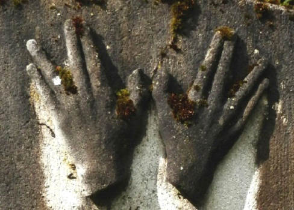
Die LEVITENKANNE weist auf levitische Abkunft. Die Leviten waren im Tempel unter anderem für die kultische Reinheit zuständig und wuschen den Priestern vor dem Opferkult die Hände. Dafür steht auf den Grabsteinen das Symbol der Kanne. Diese findet sich in den verschiedensten Formen, als bauchige Waschkrüge, meist mit Untersatz, oder hohe schlanke Gießgefäße, oft von zeitgenössischen Gieß- und Waschgefäßen beeinflusst. Manchmal eingraviert, meist jedoch plastisch hervortretend, schmücken sie Giebel oder Sockel eines Grabsteins.
Das SCHOFAR (Widderhorn) verweist auf das Ehrenamt des Schofarbläsers.
Es wird an Neujahr und am Versöhnungstag in der Synagoge geblasen, um die Sünder zur Umkehr zu mahnen. Auf Grabsteinen kann es auch als Sinnbild für die Auferstehung verstanden werden: Am Ende der Tage wird der Messias das Große Schofar blasen, um die Verstorbenen aufzuerwecken.
Der Mohel ist der rituelle Beschneider, der die Beschneidung der jüdischen Knaben am achten Tag nach ihrer Geburt vornimmt. Durch diesen Akt wird der Junge in den Bund mit Gott aufgenommen. Auf einen Mohel, einen Beschneider, deutet die Darstellung eines Beschneidungsmessers, meist in Verbindung mit den bei der Beschneidung verwendeten zwei Kelchen.
Ein aufgeschlagenes Buch steht für große Gelehrsamkeit und religiöse Bildung. Oft findet es sich auf Grabsteinen von Vorbetern und Rabbinern.
Mitunter findet sich auch die Darstellung der Bundestafeln, auf denen Moses auf dem Berg Sinai die „Zehn Gebote“ empfing. Sie sind ein Symbol für Gesetzestreue, das sich manchmal auch auf Grabsteinen von Männern namens Moses finden lässt. Die miteinander verbundenen Tafeln zeigen meist die ersten zehn Buchstaben des hebräischen Alphabetes.
Beliebt ist das Akrostichon (= Leistenvers oder Leistengedicht).
Dabei ergeben die Anfangsbuchstaben der Zeilen, senkrecht gelesen, den Namen des Verstorbenen.
So ergeben z.B. die ersten vier Wörter des Psalms 96,11 ein Akrostichon des Namens Gottes: JHWH.
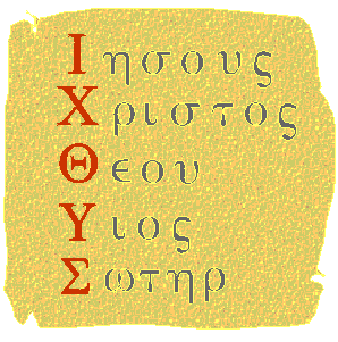
RabbinatsMuseumBraunsbach
Kultur im Rabbinat Förderverein e.V.
BM-Dieter-Hanselmann-Str. 2
D - 74542 Braunsbach
Telefon: +49-7906-8512
Telefax: +49-7906-8559
E-Mail: rabbinatsmuseum
Internet: www.rabbinatsgebaeude-braunsbach.de
Vertretungsberechtigter Vorstand: Elisabeth M. Quirbach (1. Vorsitzende), Werner Zügel
Registergericht: Schwäbisch Hall
Registernummer: VR 804
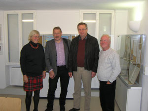
Haftungshinweis: Trotz sorgfältiger inhaltlicher Kontrolle übernehmen wir keine Haftung für die Inhalte externer Links. Für den Inhalt der verlinkten Seiten sind ausschließlich deren Betreiber verantwortlich.
Kartendaten © OpenStreetMap-Mitwirkende (ODbL). Höhenlinien: Copernicus DEM GLO-90. Schriften: Frank Ruhl Libre und Source Sans 3 (SIL Open Font License).